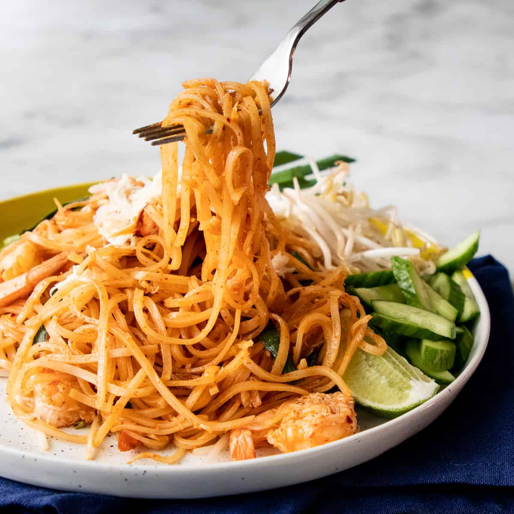

Pad Thai

Pad Thai Facts
Pad Thai is a noodle dish made with tamarind, fish sauce,
bean sprouts, and garlic chives. It is a popular dish in the
United States, and if you go to any Thai restaurant you'll
probably see it on the menu. You may notice that the dish linked
in the recipe source is not called Pad Thai exactly: it is a similar
noodle dish that uses many of the same ingredients, but unlike Pad Thai
does not have many of the toppings such as a fried egg, dried shrimp, peanuts, or tofu.
I have chosen to add this under the name Pad Thai for easier recognition,
especially since I've noticed that many American Thai restaurants do not
include some of these toppings, but to readers, please be aware that the
proper name of this dish made in this way is Sen Chan Pad Pu.
Regardless of what name you use for it, this is a delicious dish and
very easy to make with only a few ingredients.
Pad Thai Ingredients
- Dried Chilies
- Garlic
- Shallots
- Palm Sugar
- Tamarind Paste
- Fish Sauce
- Shrimp/Crab meat
- Rice Noodles
- Bean Sprouts
- Garlic Chives
- Cucumber
- Lime Wedge
Pad Thai Instructions
- Soak noodles in room temperature water until completely pliable, then drain.
The time this takes varies by brand.
- Remove the seeds from the dried chilies and grind them into a powder,
or soak them in hot water for 30 minutes until rehydrated, then pound
into a paste in a mortar and pestle..
- Pound the garlic into a paste in the mortar and pestle, then add the chopped shallots
and the ground chilies and keep grinding it together into one paste.
These first four steps can be done in advance & the paste can be frozen.
- Saute the chili paste in oil for about a minute over high heat.
- Add the palm sugar and stir until mostly dissolved.
- Add the water, tamarind paste, and fish sauce and bring the sauce to a boil.
- Add the shrimp or crab and cook until done, then take it off the heat and remove the seafood.
- Bring the sauce back to a boil over medium high heat, then add the noodles.
- Keep tossing until the noodles absorb all the sauce. If they're still too chewy, add
a small amount of water and keep tossing until they're done.
- Add some of the seafood back in, as well as the bean sprouts, and toss until
the bean sprouts are wilted.
- Plate and serve with chopped cucumber, extra bean sprouts, and a wedge of lime.
Top with the rest of the seafood as a garnish!
Home